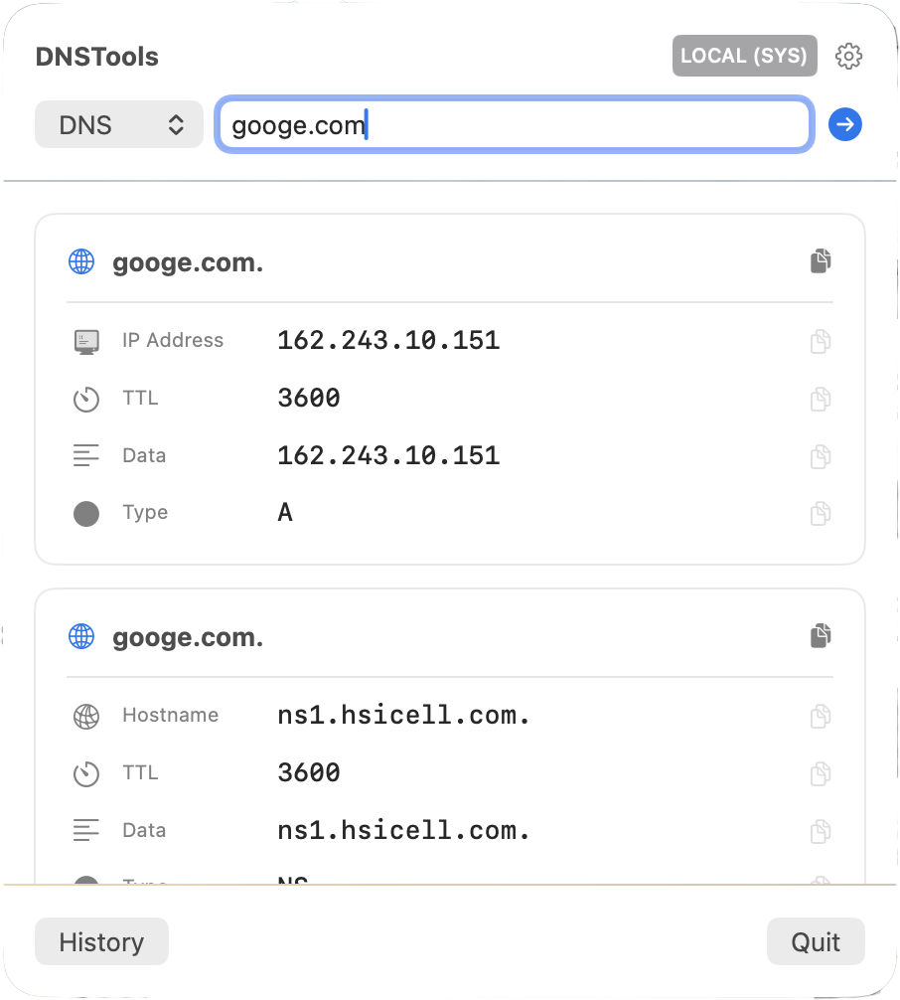
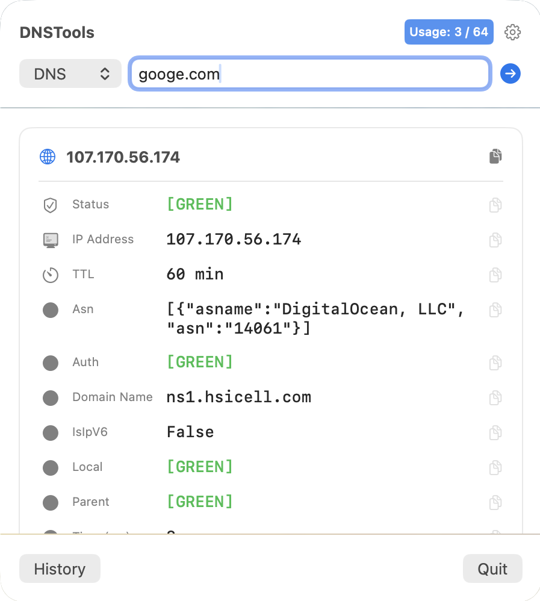
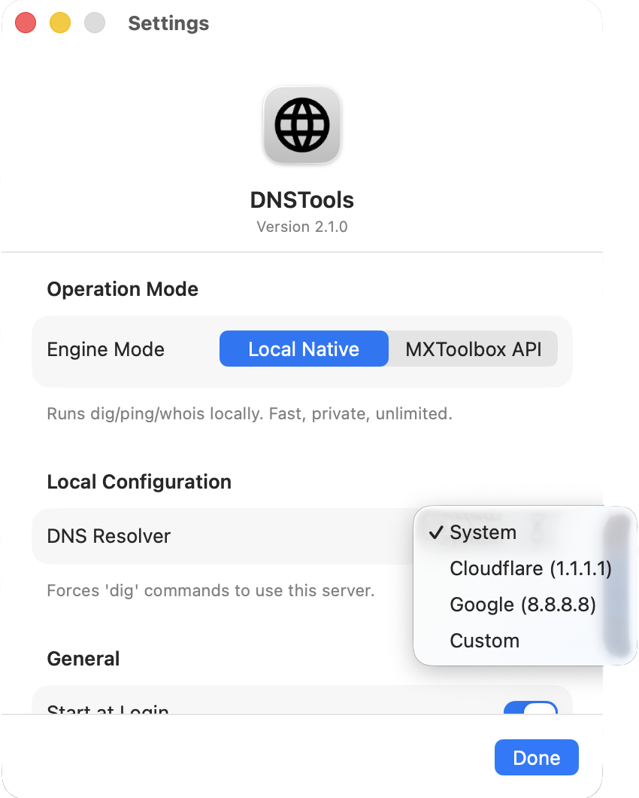
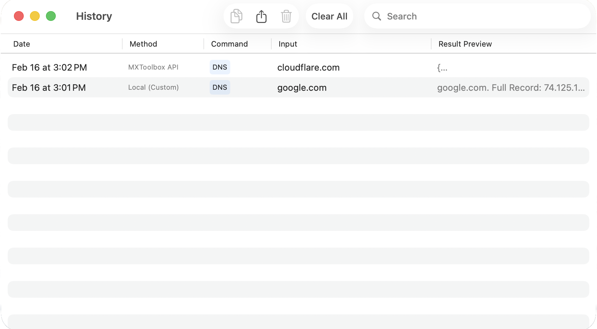

Total Control.
Force local lookups via Cloudflare (1.1.1.1), Google (8.8.8.8), or your own Custom DNS to test propagation and split-horizon networks.
- ✓ Force 1.1.1.1 / 8.8.8.8
- ✓ Custom IP Injection
- ✓ SwiftData History Logging
- ✓ CSV Export
Bridge the gap between running terminal network lookup commands and a graphical interface.
After downloading, remove quarantine attribute:
xattr -dr com.apple.quarantine /Applications/DNSToolsMenu.app
Copied!
Seamlessly switch between native performance and API insights.
Runs local dig, ping, and trace commands directly on your machine. Zero latency. Completely private.

Unlocks advanced server health checks and standardized reporting via the cloud API.

Force local lookups via Cloudflare (1.1.1.1), Google (8.8.8.8), or your own Custom DNS to test propagation and split-horizon networks.

Automatic logging of every search with advanced filtering.
